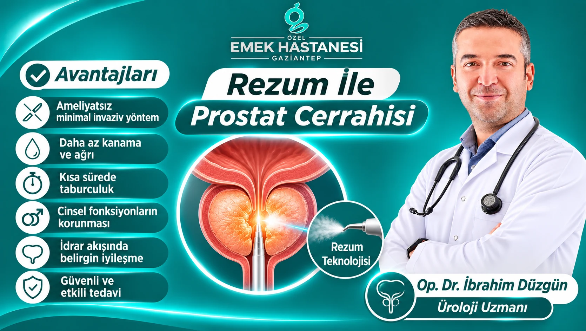
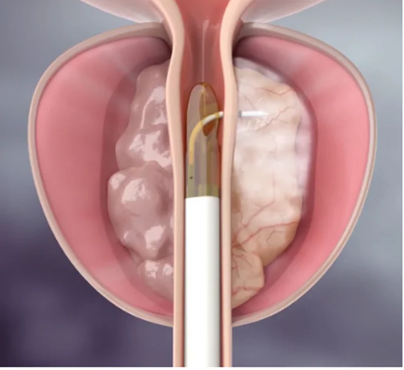
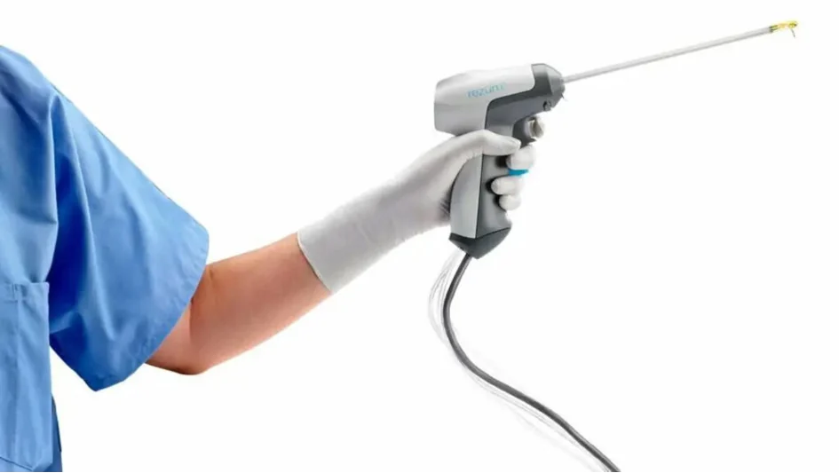

Eines der Gesundheitsprobleme, mit denen Männer mit zunehmendem Alter konfrontiert werden, ist die gutartige Vergrößerung der Prostata. Dieser als Benigne Prostatahyperplasie (BPH) bezeichnete Zustand kann sich insbesondere durch Veränderungen der Gewohnheiten beim Wasserlassen bemerkbar machen. Häufiger Harndrang, nächtliches Aufwachen, um zur Toilette zu gehen, ein schwächerer Harnstrahl und das Gefühl, die Blase nicht vollständig entleeren zu können, gehören zu den Anzeichen einer Prostatavergrößerung, die den Alltag beeinträchtigen.
Die Fortschritte in der Medizintechnik haben es ermöglicht, für die Behandlung der gutartigen Prostatavergrößerung weniger eingreifende Alternativen zu entwickeln. Eines dieser Verfahren ist die Rezum-Wasserdampftherapie, eine minimalinvasive Anwendung, die darauf abzielt, das Prostatagewebe kontrolliert zu verkleinern.
Die Rezum-Technologie, die als Alternative zu herkömmlichen chirurgischen Verfahren in Betracht gezogen werden kann, kann bei geeigneten Patienten dazu beitragen, den Harnfluss zu verbessern und die durch die Prostatavergrößerung bedingten Beschwerden zu verringern.
Was ist die Rezum-Therapie?

Rezum ist ein minimalinvasives Verfahren zur Behandlung der gutartigen Prostatavergrößerung, das die kontrollierte Wärmeenergie von Wasserdampf nutzt.
Bei der Anwendung wird ein speziell entwickeltes Gerät durch die Harnröhre bis zum Prostatagewebe vorgeschoben. In die festgelegten Bereiche wird eine kontrollierte Menge Wasserdampf abgegeben. Die vom Wasserdampf transportierte Wärmeenergie erzeugt in den gezielt behandelten Prostatazellen eine kontrollierte Gewebewirkung.
Mit der Zeit baut der Körper dieses betroffene Gewebe im Rahmen des natürlichen Heilungsprozesses ab. Dies zielt darauf ab, den Druck der Prostata auf die Harnröhre zu verringern und den Harnabfluss zu erleichtern.
Eine wichtige Eigenschaft der Rezum-Methode besteht darin, dass das Prostatagewebe während der Behandlung nicht vollständig chirurgisch entfernt werden muss.
Wie wird die Rezum-Prostatabehandlung durchgeführt?

Die Rezum-Anwendung erfolgt unter einem Anästhesieverfahren, das dem klinischen Zustand des Patienten und dem Behandlungsplan entspricht.
Der Eingriff besteht im Allgemeinen aus den folgenden Schritten:
- Zunächst werden die Prostatagröße, die Beschwerden beim Wasserlassen und der allgemeine urologische Zustand des Patienten beurteilt.
- Bei Patienten, die als geeignet eingestuft werden, wird das spezielle Rezum-Gerät durch die Harnröhre bis in den Bereich der Prostata vorgeschoben.
- In die vergrößerten Bereiche des Prostatagewebes wird kontrolliert Wasserdampf abgegeben.
- Durch die vom Wasserdampf erzeugte Wärmewirkung kommt es im Zielgewebe zu zellulären Veränderungen.
- In den folgenden Wochen und Monaten ist zu erwarten, dass das Volumen des Prostatagewebes durch den natürlichen Heilungsprozess des Körpers abnimmt.
Nach dem Eingriff kann bei manchen Patienten vorübergehend ein Blasenkatheter erforderlich sein. Wann der Katheter entfernt wird, hängt vom Zustand des Patienten und von der Beurteilung des Arztes ab.
Welche Vorteile hat die Rezum-Therapie?
Die Rezum-Technologie kann bei geeigneten Patienten verschiedene Vorteile bei der Behandlung der Prostatavergrößerung bieten.
Ein minimalinvasives Verfahren
Die Rezum-Therapie wird über die Harnröhre durchgeführt, ohne dass ein offener chirurgischer Schnitt nötig ist. Dadurch ist sie im Vergleich zu herkömmlichen chirurgischen Eingriffen eine weniger eingreifende Behandlungsmöglichkeit.
Kann dazu beitragen, das Blutungsrisiko stärker zu begrenzen
Die Behandlung des Prostatagewebes mit kontrollierter Wasserdampfenergie ist ein anderer Ansatz als die klassischen Verfahren zur Gewebeentfernung. Bei geeigneten Patienten kann dies hinsichtlich der Blutung einen Vorteil bieten. Die Möglichkeit einer Blutung wird dadurch jedoch nicht vollständig ausgeschlossen.
Kann den Erhalt der Sexualfunktion unterstützen
Eine bemerkenswerte Eigenschaft der Rezum-Methode besteht darin, dass sie bei geeigneten Patienten einen Vorteil beim Erhalt der Ejakulationsfunktion bieten kann.
Der rückwärtige Samenerguss (retrograde Ejakulation), der bei manchen herkömmlichen Prostataoperationen auftreten kann, wird nach Rezum in geringerer Häufigkeit berichtet. Der Erhalt der Sexualfunktion ist jedoch nicht garantiert, und die individuellen Ergebnisse können unterschiedlich ausfallen.
Zielt darauf ab, den Harnfluss zu verbessern
Eines der Hauptziele der Rezum-Therapie ist es, den Druck auf die durch die Prostatavergrößerung verengte Harnröhre zu verringern. Nach der Behandlung können sich mit der Verkleinerung des Prostatagewebes ein stärkerer Harnstrahl und weniger Beschwerden beim Wasserlassen zeigen.
Kann eine kurze Überwachung im Krankenhaus ermöglichen
Die Rezum-Anwendung kann bei vielen Patienten als tagesklinischer Eingriff oder im Rahmen einer kurzen Überwachung im Krankenhaus durchgeführt werden. Der allgemeine Gesundheitszustand des Patienten und sein Bedarf nach dem Eingriff bestimmen den Zeitpunkt der Entlassung.
Erzeugt eine kontrollierte Wirkung auf das Prostatagewebe
Der Wasserdampf wird kontrolliert in die Zielbereiche der Prostata abgegeben. Dieser Ansatz ermöglicht es, die Behandlung auf bestimmtes Gewebe zu konzentrieren.
Für wen ist die Rezum-Therapie geeignet?
Die Rezum-Therapie kann insbesondere für manche Patienten in Betracht gezogen werden, die aufgrund einer gutartigen Prostatavergrößerung Beschwerden beim Wasserlassen haben und von einer medikamentösen Behandlung nicht ausreichend profitieren.
Allerdings ist nicht jeder Mensch mit einer Prostatavergrößerung für dieses Verfahren geeignet.
Vor der Behandlung werden die folgenden Kriterien beurteilt:
- Volumen und anatomischer Aufbau der Prostata
- Veränderungen der Harnflussgeschwindigkeit
- Restharnmenge in der Blase
- Stärke der durch die Prostatavergrößerung bedingten Beschwerden
- Eingenommene Medikamente und frühere Behandlungen
- Allgemeiner Gesundheitszustand des Patienten und seine Erwartungen an die Behandlung
Außerdem ist es wichtig, dass bei Patienten mit Verdacht auf Prostatakrebs die notwendigen Untersuchungen durchgeführt werden. Rezum ist keine Behandlung von Prostatakrebs, sondern ein Behandlungsverfahren für die gutartige Prostatavergrößerung.
Wie verläuft die Heilung nach Rezum?
Der Heilungsverlauf nach der Rezum-Therapie kann sich von dem bei manchen anderen Prostataeingriffen unterscheiden, da sich die Wirkung der Anwendung im Laufe der Zeit einstellt.
In den ersten Tagen können Brennen beim Wasserlassen, häufiger Harndrang, leichtes Blut im Urin oder vorübergehende Schwierigkeiten beim Wasserlassen auftreten. Diese Anzeichen gehören meist zum Heilungsverlauf; bei starken oder anhaltenden Beschwerden ist jedoch eine ärztliche Kontrolle erforderlich.
Die Wirkung der Behandlung kann in der Regel innerhalb einiger Wochen spürbar werden. Die Verkleinerung des Prostatagewebes und der Rückgang der Beschwerden beim Wasserlassen können hingegen einige Monate dauern.
In der Heilungsphase ist es wichtig, dass die Patienten:
- die vom Arzt empfohlenen Medikamente regelmäßig einnehmen,
- die Anweisungen zur Katheterpflege befolgen,
- die ärztlichen Empfehlungen zu einer ausreichenden Flüssigkeitszufuhr beachten,
- schwere körperliche Aktivitäten für die vom Arzt genannte Dauer vermeiden,
- die Kontrolluntersuchungen nicht versäumen.
Die Unterschiede zwischen Rezum und herkömmlichen Prostataoperationen
Die bei der Behandlung der Prostatavergrößerung eingesetzten Verfahren unterscheiden sich je nach den Bedürfnissen des Patienten.
Bei herkömmlichen Prostataoperationen kann das vergrößerte Prostatagewebe mit verschiedenen chirurgischen Techniken entfernt werden. Bei der Rezum-Methode wird das Prostatagewebe dagegen mit der Wärmewirkung von Wasserdampf behandelt, und es ist zu erwarten, dass sich das Gewebe im Laufe der Zeit verkleinert.
Die wesentlichen Unterschiede zwischen den beiden Ansätzen sind:
- Rezum ist ein minimalinvasiver Eingriff, der über die Harnröhre durchgeführt wird.
- Bei klassischen chirurgischen Verfahren kann das Prostatagewebe direkt entfernt werden.
- Nach Rezum können die Heilung und das Eintreten der Behandlungswirkung Zeit in Anspruch nehmen.
- Bei manchen herkömmlichen chirurgischen Verfahren kann die Erleichterung beim Harnfluss früher eintreten.
- Die Auswirkungen auf die Sexualfunktion und den Samenerguss können je nach angewendetem Verfahren unterschiedlich sein.
Welches Verfahren gewählt wird, sollte anhand der Größe und der anatomischen Merkmale der Prostata sowie des Alters, der Begleiterkrankungen und der Erwartungen des Patienten festgelegt werden.
Warum ist eine frühzeitige Abklärung bei Prostatavergrößerung wichtig?
Die gutartige Prostatavergrößerung kann im Laufe der Zeit die Funktion des Wasserlassens beeinträchtigen. Bei manchen unbehandelten Patienten können sich Restharn in der Blase, wiederkehrende Harnwegsinfektionen, Blasensteine und Probleme entwickeln, die die Nierenfunktion beeinträchtigen können.
Deshalb ist es wichtig, dass Männer, bei denen sich die Gewohnheiten beim Wasserlassen verändern, insbesondere nach dem 50. Lebensjahr einen Facharzt für Urologie aufsuchen.
Anzeichen wie häufiges nächtliches Aufstehen zum Wasserlassen, Schwierigkeiten beim Beginn des Wasserlassens, ein unterbrochener Harnstrahl und das Gefühl, dass sich die Blase nicht vollständig entleert, sollten nicht ignoriert werden.
Häufig gestellte Fragen
Ist die Rezum-Therapie ein Verfahren ohne Operation?
Rezum ist ein minimalinvasiver Eingriff über die Harnröhre, der keine klassische offene Operation erfordert. Technisch gesehen handelt es sich um ein Behandlungsverfahren, das einen chirurgischen Eingriff beinhaltet.
Wie lange dauert der Rezum-Eingriff?
Die Dauer des Eingriffs hängt vom Aufbau der Prostata des Patienten und vom Umfang der Behandlung ab. In der Regel lässt sich die Anwendung in kurzer Zeit abschließen.
Wird nach der Rezum-Therapie ein Katheter gelegt?
Ja, bei manchen Patienten kann nach dem Eingriff vorübergehend ein Blasenkatheter erforderlich sein. Wie lange der Katheter verbleibt, wird anhand einer individuellen Beurteilung festgelegt.
Beeinflusst Rezum das Sexualleben?
Rezum kann beim Erhalt der Ejakulationsfunktion gegenüber manchen herkömmlichen Prostataoperationen einen Vorteil bieten. Dennoch kann bei keinem Patienten garantiert werden, dass die Sexualfunktion nicht beeinträchtigt wird.
Wann zeigt sich die Wirkung der Rezum-Therapie?
Bei manchen Patienten können sich in den ersten Wochen Anzeichen einer Besserung zeigen. Bis die volle Wirkung der Behandlung beurteilt werden kann, können einige Monate vergehen.
Beseitigt die Rezum-Therapie die Prostata vollständig?
Nein. Das Ziel der Rezum-Therapie ist nicht, die Prostata vollständig zu beseitigen, sondern durch Verringerung des Volumens des gutartig vergrößerten Gewebes den Druck auf die Harnröhre zu mindern.
Fazit: Individuelle und moderne Lösungen in der Prostatabehandlung
Die gutartige Prostatavergrößerung gehört zu den Gesundheitsproblemen, die die Lebensqualität von Männern erheblich beeinträchtigen können und mit dem Alter häufiger auftreten.
Mit ihrem minimalinvasiven Ansatz, der gezielten Anwendung am Gewebe und ihren möglichen Vorteilen beim Erhalt der Ejakulationsfunktion gehört die Rezum-Wasserdampftherapie zu den modernen Möglichkeiten, die bei der Prostatabehandlung in Betracht gezogen werden können.
Allerdings unterscheiden sich der Aufbau der Prostata und der Behandlungsbedarf bei jedem Patienten. Deshalb ist eine umfassende urologische Abklärung erforderlich, um das am besten geeignete Verfahren festzulegen.
Im Fachbereich Urologie des Privatkrankenhauses Emek Gaziantep können Sie sich bei Op. Dr. İbrahim Düzgün ausführlich über die Rezum-Prostatabehandlung informieren und erfahren, welche Behandlungsmöglichkeiten bei Ihren durch die Prostatavergrößerung bedingten Beschwerden für Sie geeignet sind.
Dieser Inhalt wurde zu Informationszwecken erstellt. Entscheidungen über Diagnose und Behandlung sollten nach einer Untersuchung durch einen Facharzt und den erforderlichen Abklärungen getroffen werden.